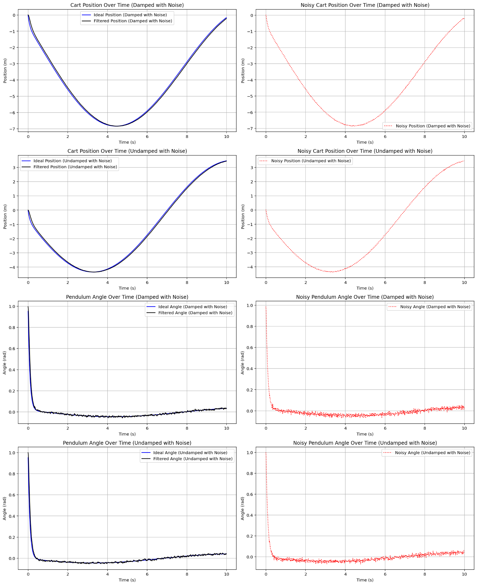
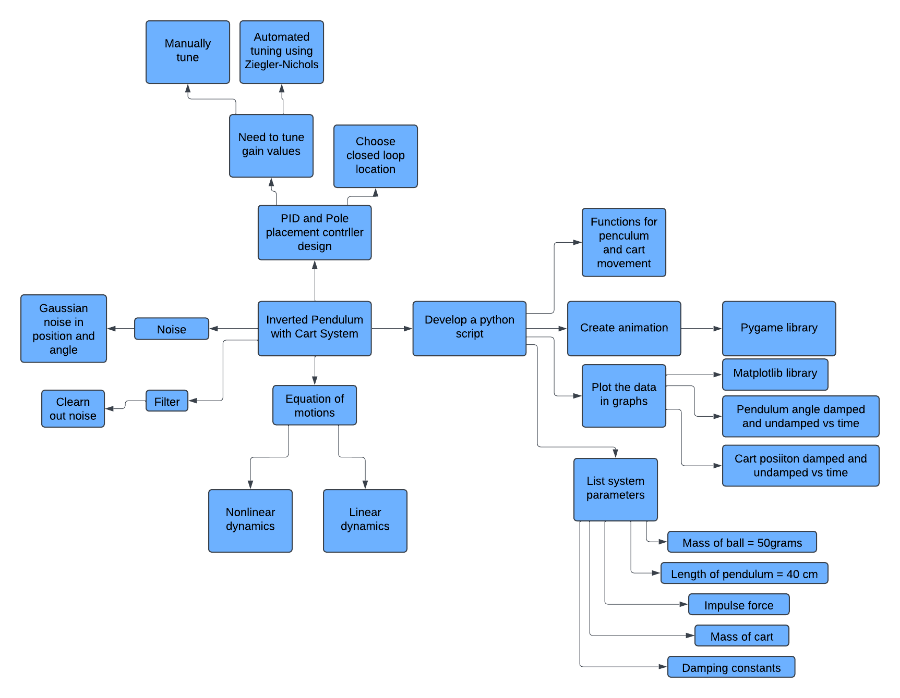
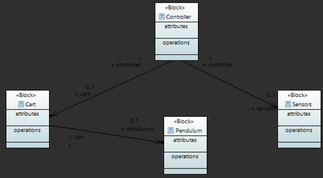
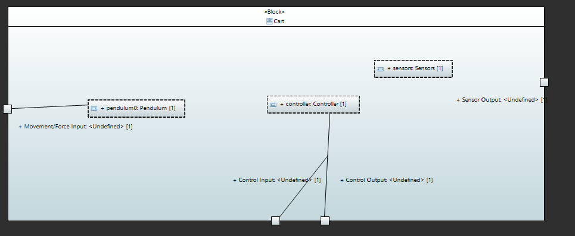
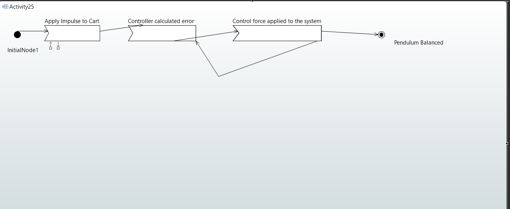
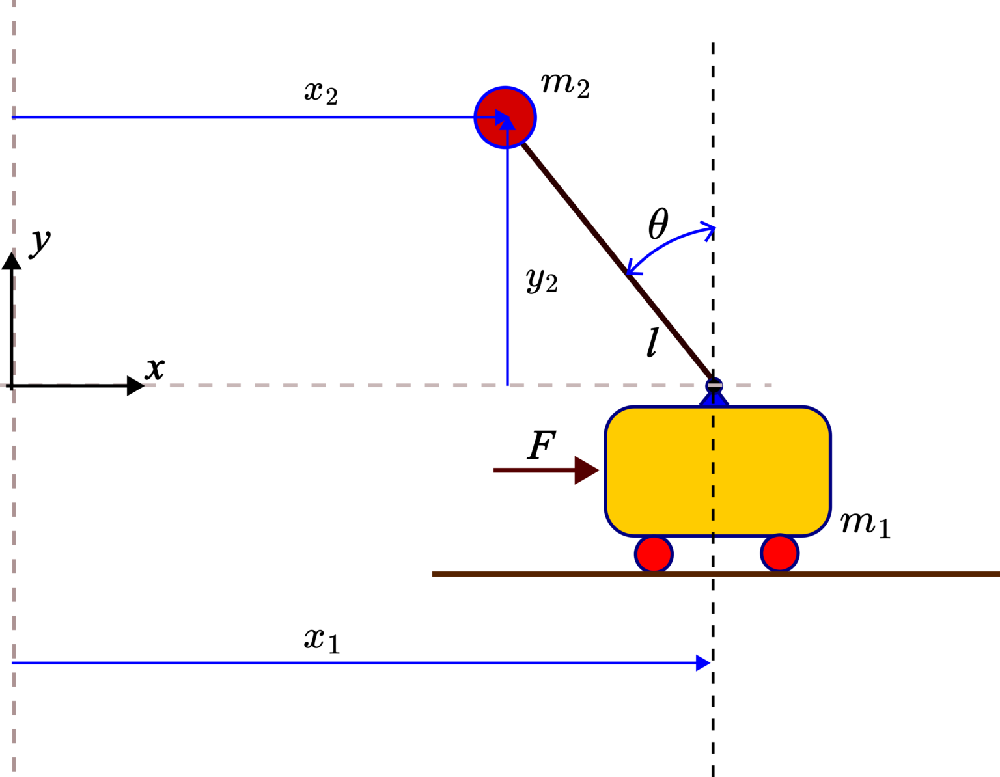
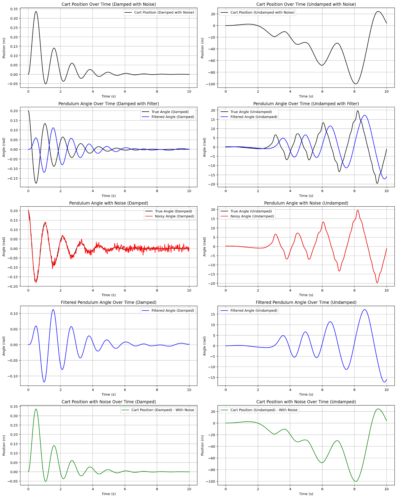

Inverted Pendulum Control System
Designed and simulated an inverted pendulum on a cart using Python, combining Model-Based Systems Engineering, nonlinear dynamic modeling, sensor-noise simulation, low-pass filtering, PID control, pole-placement state feedback, and real-time Pygame visualization. The two control strategies were evaluated under damped, undamped, noisy, and filtered operating conditions.

Stabilizing an Unstable Cart-Pendulum System Under Realistic Disturbances
The project objective was to maintain an inverted pendulum in its upright position by commanding horizontal motion of the cart. The system was intentionally evaluated with external disturbances, damping effects, and simulated sensor noise so that the control strategies could be compared under more realistic operating conditions.
Upright Stability
Maintain the pendulum near the vertical equilibrium position after a disturbance.
Two Control Strategies
Implement and compare both PID control and pole-placement state-feedback control.
Sensor Noise Handling
Introduce measurement noise and apply filtering to examine controller robustness and signal quality.
No Pivot Actuator
Stabilization had to be achieved by moving the cart rather than directly actuating the pendulum joint.
Dynamic Visualization
Animate the cart and pendulum response in real time using Pygame and display key controller variables.
Defined Physical Geometry
Model a 0.4 m pendulum with a 0.05 kg pendulum mass and a 0.5 kg cart.
Defining the System Before Building the Controller
Model-Based Systems Engineering principles were used to organize the system architecture and identify the relationships between the cart, pendulum, sensors, controller, and external environment. SysML models were created in Eclipse Papyrus before the dynamic simulation and controller implementation were developed.




Deriving the Nonlinear Dynamics With the Lagrangian Method
The cart-pendulum equations of motion were developed from the kinetic and potential energy of the system using Lagrange's equations. The model included cart translation, pendulum rotation, gravitational effects, air drag, pivot damping, and an externally applied cart force.

yp = l cos(θ)
Connecting Dynamics, Control, Noise, Filtering, and Visualization
The Python simulation numerically integrated the nonlinear equations of motion and repeatedly updated the controller from the current system state. Separate cases were executed with and without damping, noise, and filtering to expose the effect of each modeling choice.
Implementation: NumPy was used for array and state-space calculations, SciPy for numerical integration and pole placement, Matplotlib for performance plots, and Pygame for the animated cart-pendulum visualization.
Correcting Pendulum-Angle Error With Proportional, Integral, and Derivative Action
The PID controller used the pendulum-angle error as its feedback signal. The proportional term responded to the current deviation, the integral term accumulated persistent error, and the derivative term reacted to the rate of change to reduce oscillation and overshoot.
def pid_controller(y, int_err, prev_err):
error = -y[2]
int_err += error * dt
derivative_error = (error - prev_err) / dt
F = Kp * error + Ki * int_err + Kd * derivative_error
return F, int_err, error
Using State Feedback to Place the Closed-Loop Dynamics
A second controller was implemented using state feedback. Linearized damped and undamped state-space models were defined, desired stable pole locations were selected, and SciPy's place_poles() routine was used to calculate the feedback gain matrix.
desired_poles_damped = np.array([-3, -3.5, -4, -4.5])
desired_poles_undamped = np.array([-3, -3.5, -4, -4.5])
K_gain_damped = place_poles(
A_matrix_damped,
B_matrix,
desired_poles_damped
).gain_matrix
control_force = (-K_gain @ state_vector).item()

Testing Controller Performance With Imperfect Measurements
Gaussian noise was added to the simulated cart-position and pendulum-angle measurements to approximate imperfect sensor data. Low-pass filtering was then used to smooth high-frequency fluctuations before the response was visualized and compared.
Noise Simulation
Random measurement variations were introduced around the true state so the controllers could be assessed with non-ideal data.
Gaussian NoiseLow-Pass Filtering
Filtered signals reduced visible measurement fluctuations and made the underlying cart and pendulum response easier to track.
Signal SmoothingKey observation: filtering improved signal quality, but filtering alone could not replace physical damping when the pole-placement controller was tested in the undamped noisy case.
Comparing Robustness Across Damped and Undamped Conditions
The final comparison focused on how the two control strategies behaved when damping and measurement noise were changed. This made it possible to separate the effect of the controller itself from the stabilizing contribution of damping and filtering.
PID Controller
The PID controller maintained the pendulum near the upright state in both damped and undamped simulations. Noise increased visible variation, while filtering smoothed the measured response.
Stable Across Tested CasesPole Placement
Pole placement produced a stable, decaying response when damping was present. In the undamped noisy case, oscillations persisted and filtering alone was not sufficient to achieve the same stability.
Damping-SensitiveTurning the Numerical Model Into a Real-Time Cart-Pendulum Animation
Pygame was used to convert the simulated state history into an animated cart, rail, pendulum rod, and pendulum mass. The visualization displayed time and pendulum angle while allowing the user to switch between test conditions and interact with controller-gain sliders.
Project Outcome
The project combined system architecture, analytical dynamics, numerical simulation, control design, signal processing, and software visualization into a single mechatronics workflow. It demonstrated the trade-offs between PID and pole-placement control and highlighted the importance of damping and measurement filtering in dynamic systems.